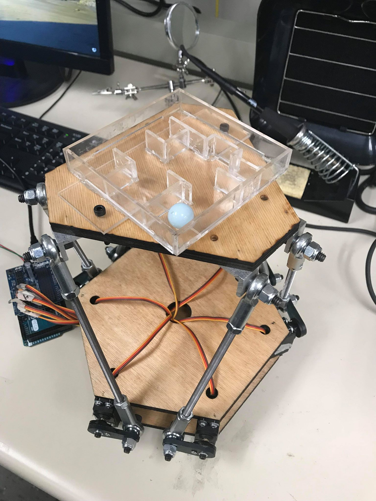
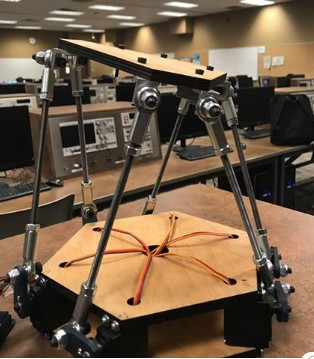
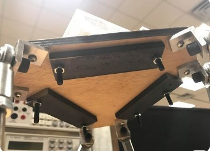

Stewart Platform
Designed and built a 6 DOF Stewart Platform which was programmed to solve a a marble maze. Inverse Kinematics was used to determine the length and position of all the joints in the hexapod linkage.
System Overview
The platform was programmed to solve the maze with a single command.
Hexapod Linkage
The hexapod linkage was able to manipulate the upper platform to extreme angles.
Optimization
The design was optimized to increase the strength to weight ratio, allowing the platform to be able to solve the maze with an additional 5kg.